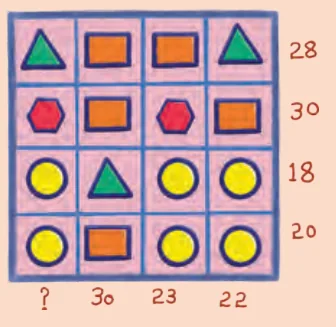

We have already seen how to solve a linear equation in a single variable. In order to find the solution of a pair of linear equations, we need to think of methods by which we can reduce the pair to a linear equation in one variable. In this section we shall study two methods.
13.5.1 Algebraic Methods for Solving a Pair of Linear Equations
Think and Reflect
Solve the puzzle and discuss your strategy with your friends. Can you determine the value represented by each shape?

We note from the first row that the values of 2 triangles and 2 rectangles add up to 28. We may express this as \(2T + 2R = 28\) or as \(T + R = 14\). Similarly, the last column may be written as \(2C + T + R = 22\). Here T, S and C represent the values assigned to a triangle, a rectangle and a circle respectively.
Since we know that \(T + R = 14\), we can rewrite the second equation as \(2C + 14 = 22\), solving which, we get \(C = 4\). Once you have the value of C, you can find the values of the other shapes. Try it for yourself.
We will now learn two methods for solving a pair of linear equations. One is called the method of substitution while the other is referred to as the method of elimination.
Substitution Method: We will demonstrate the method of substitution by solving a pair of linear equations in two variables.
Example 7: Solve the following pair of equations by substitution method:
\(7x - 15y = 2 \qquad (1)\)
\(x + 2y = 3 \qquad (2)\)
Solution:
Step 1: We select either of the equations and express one variable in terms of the other.
Let us consider Equation (2), that is, \(x + 2y = 3\) and write it as
\(x = 3 - 2y \qquad (3)\)
Step 2: Clearly, all \((x, y)\) that satisfy both the given equations must also satisfy \(x = 3 - 2y\). Since this relation must hold true in Equation (1), substituting \(x = 3 - 2y\) in it we get
\(7(3 - 2y) - 15y = 2\)
or \(\quad 21 - 14y - 15y = 2\)
or \(\quad -29y = -19\)
Therefore, \(y = \frac{19}{29}\).
Step 3: We can find the value of \(x\) by substituting the value of \(y\) in any of the equations. Let us use Equation (3).
\(x = 3 - 2\left(\frac{19}{29}\right) = \frac{49}{29}.\)
Therefore, the solution of the Equations (1) and (2) is \(x = \frac{49}{29}\), \(y = \frac{19}{29}\).
To verify if the solution is correct, we substitute \(x = \frac{49}{29}\), \(y = \frac{19}{29}\), in Equations (1) and (2) and check if they are satisfied. Try it for yourself.
Think and Reflect
What if we had expressed \(y\) in terms of \(x\), i.e., take Equation (2) and write \(y = \frac{1}{2}(3 - x)\). Would we still get the same solution?
Example 8: If two angles of a triangle are \(x^\circ\) and \(y^\circ\) with \(y = 4x\), and the third angle is \(50^\circ\), what are the angles?
The three angles of the triangle are \(x^\circ\), \(y^\circ\), and \(50^\circ\).
Using the angle sum property of triangles,
\(x^\circ + y^\circ + 50^\circ = 180^\circ \qquad (1)\)
Also, \(\quad y = 4x. \qquad (2)\)
Substituting the value of \(y\) in Equation (1),
we get \(\quad x + 4x + 50 = 180\)
or \(\quad 5x = 130\)
or \(\quad x = 26^\circ.\)
Therefore, \(y = 4x = 104^\circ\).
Elimination Method
Now let us consider the method of elimination for solving a pair of linear equations. This requires us to eliminate one of the variables \(x\) or \(y\). Sometimes it is more convenient than the substitution method. Let us see how this method works.
Example 9: The ratio of incomes of two persons is 9 : 7 and the ratio of their expenditures is 4 : 3. If each of them manages to save ₹2000 per month, find their monthly incomes.
Since the ratio of the incomes of the two persons is 9 : 7, it means that for every 9 equal parts of income of the first person, the second person has 7 equal parts. If the equal part is \(x\), the incomes of the two persons will be \(9x\) and \(7x\).
In a similar manner, we may consider their expenditures to be \(4y\) and \(3y\), respectively.
Then the equations formed by subtracting the expenditure from the income leading to a saving of ₹2000 are as follows:
\(9x - 4y = 2000 \qquad (1)\)
\(7x - 3y = 2000 \qquad (2)\)
To solve these by the method of elimination, we proceed as follows:
Step 1: We first decide which variable to eliminate. Suppose we wish to eliminate \(y\) from both equations. We multiply each side of Equation (1) by 3 [the coefficient of \(y\) in Equation (2)], and multiply Equation (2) by 4 [the coefficient of \(y\) in (1)]. By doing this the coefficients of \(y\) in both equations become equal. We get the equations:
\(27x - 12y = 6000 \qquad (3)\)
\(28x - 12y = 8000 \qquad (4)\)
Step 2: Subtract the LHS and RHS of Equation 3 from the LHS and RHS of Equation 4 respectively. Since we are subtracting equal quantities from equal quantities, we get
\((28x - 27x) - (12y - 12y) = 2000.\)
This step eliminates the variable \(y\), leaving us with \((28x - 27x) = 2000\) or \(x = 2000\).
Step 3: Substituting this value of \(x\) in (1), we get
\(9(2000) - 4y = 2000\) i.e., \(y = 4000.\)
Hence, the solution of the equations is \(x = 2000\), \(y = 4000\).
Therefore, the monthly incomes of the two persons are ₹18,000 and ₹14,000, respectively.
Let us verify our solution. The ratio of the incomes is 18000 : 14000 = 9 : 7. Also, the ratio of their expenditures = (18000 − 2000) : (14000 − 2000) = 16000 : 12000 = 4 : 3. Hence, the conditions of the problem are satisfied.
Think and Reflect
The method used in solving this problem is called the Elimination Method because we eliminate one of the variables to obtain a linear equation in the other variable. In the example above, we eliminated \(y\). Try the same problem by eliminating \(x\) instead of \(y\). Also try to solve the two equations using the Substitution Method. Assess the pros and cons of each method.
Example 10: The sum of a two-digit number and the number obtained by reversing its digits is 66. If the digits of the number differ by 2, find the number. How many such numbers are there?
Let the ten’s and the unit’s digits in the first number be \(x\) and \(y\), respectively. Also let us assume that \(x\) is the larger digit and \(y\) is the smaller one. So, the first number may be written as \(10x + y\) in the expanded form (for example, \(73 = 10 \times 7 + 3\)).
When the digits are reversed, \(x\) becomes the unit’s digit and \(y\) becomes the ten’s digit. This number, in the expanded notation, is \(10y + x\) (for example, when 73 is reversed, we get \(37 = 10 \times 3 + 7\)).
According to the given condition, we have \((10x + y) + (10y + x) = 66\). Thus
\(11(x + y) = 66\), i.e., \(x + y = 6 \qquad (1)\)
We are also given that the digits differ by 2, i.e.,
\(x - y = 2 \qquad (2)\)
Solving (1) and (2) by elimination, we get \(x = 4\) and \(y = 2\), so, the two-digit number is 42.
The number 42 and its reverse 24 when added gives 66, and this is the unique solution.
Think and Reflect
Does a pair of linear equations always have a unique solution? Can you analyse this using the Elimination Method? While subtracting the equations to eliminate a particular variable, if the other variable remains, then clearly there is a unique solution. But what if the second variable gets eliminated too while eliminating the first variable? Can you think of a situation where this happens?
Consider the linear equations
\(x - y = 10 \qquad (1)\)
\(10x - 10y = 100 \qquad (2)\)
To eliminate \(x\), we multiply the first equation by 10. But by doing this, both equations become \(10x - 10y = 100\). Since both equations are the same, every solution of \(10x - 10y = 100\) is a solution of both equations. We know that \(10x - 10y = 100\) has infinitely many solutions. Hence, the given pair of equations has infinitely many solutions.
Think and Reflect
How many solutions are there to the equations \(10x - 5y = 20\) and \(4x - 2y = 8\)?
Give 3 more examples of pairs of equations that lead to \(0 = 0\) after subtraction, and therefore have infinitely many solutions. Can you find a simple rule to check when this happens?
Consider a general pair of equations
\(a_1x + b_1y + c_1 = 0\)
\(a_2x + b_2y + c_2 = 0\)
with \(a_2\), \(b_2\) and \(c_2\) each not equal to 0.
From the discussion above, it can be seen that whenever one of the equations is a constant multiple of another, the equations are the same and so have an infinite number of solutions. Suppose this constant multiple is \(k\), where \(k\) is not necessarily an integer but may be any number. Then
\(a_1 = ka_2,\ b_1 = kb_2,\ c_1 = kc_2\), where \(k \ne 0.\)
Thus, when \(\dfrac{a_1}{a_2} = \dfrac{b_1}{b_2} = \dfrac{c_1}{c_2} = k\), the pair of equations has infinitely many solutions.
Think and Reflect
What if one of \(a_2, b_2, c_2\) is zero?
Think and Reflect
Does a pair of linear equations always have either a unique solution or infinitely many solutions?
Consider the linear equations
\(x - y = 10 \qquad (1)\)
\(10x - 10y = 101 \qquad (2)\)
Multiplying both sides of (1) by 10 gives
\(10x - 10y = 100 \qquad (3)\)
The left hand side in (2) and (3) are equal expressions, but the right hand side are not. Hence we cannot find values of \(x\) and \(y\) that satisfy both (2) and (3). Thus, this pair of equations has no solution!
Think and Reflect
Give 3 more examples of pairs of equations that have no solution. Can you find a simple rule to check when this will happen?
When a pair of equations
\(a_1x + b_1y + c_1 = 0\)
\(a_2x + b_2y + c_2 = 0\)
(with \(a_2\), \(b_2\) and \(c_2\) all not equal to 0) is such that after suitable multiplications, we can make
- the coefficients of \(x\) of both equations equal, and
- the coefficients of \(y\) of both equations equal
while the constants \(c_1\) and \(c_2\) remain unequal, the pair has no solution. These conditions mean \(a_1 = ka_2\), \(b_1 = kb_2\), \(c_1 \ne kc_2\), where \(k \ne 0\).
Hence, when \(\dfrac{a_1}{a_2} = \dfrac{b_1}{b_2} \ne \dfrac{c_1}{c_2}\), the pair has no solution.
When \(\dfrac{a_1}{a_2} = \dfrac{b_1}{b_2}\), both the variables get eliminated during the Elimination Method. Based on what happens to the constants, the pair can either have an infinite number of solutions or no solution.
We have already seen that when one of the variables remains during the Elimination Method, there exists a unique solution. This can happen only when \(\dfrac{a_1}{a_2} \ne \dfrac{b_1}{b_2}\).
Summarising, we have the following cases:
- when \(\dfrac{a_1}{a_2} \ne \dfrac{b_1}{b_2}\), the pair has a unique solution,
- when \(\dfrac{a_1}{a_2} = \dfrac{b_1}{b_2} = \dfrac{c_1}{c_2}\), the pair has an infinite number of solutions, and
- when \(\dfrac{a_1}{a_2} = \dfrac{b_1}{b_2} \ne \dfrac{c_1}{c_2}\), the pair has no solution.
Think and Reflect
Are the converses of the above statements true?
Thus, (1), (2) and (3) can be used as simple rules to check for the nature of solutions.
Think and Reflect
Can there be methods other than elimination and substitution to reduce a pair of linear equations in two variables to a linear equation in one variable? If so, describe them.
A Pinch of History
Solving systems of linear equations is one of the oldest problems in mathematics, going back thousands of years. The earliest traces appear in Babylonian cuneiform tablets (c. 2000 BCE). They were studied systematically in ancient China; the Nine Chapters on the Mathematical Art (compiled roughly two thousand years ago) devotes an entire chapter, fangcheng, to systems of linear equations, solved by arranging coefficients in columns of counting rods and then combining columns to cancel out variables — a procedure essentially identical to modern elimination, fully eighteen centuries before Gauss’s name became attached to it in Europe. Many Indian mathematicians, including Āryabhaṭa (499 CE) and Brahmagupta (628 CE), also studied general systems of equations in several unknowns using their own systematic reduction techniques including elimination.